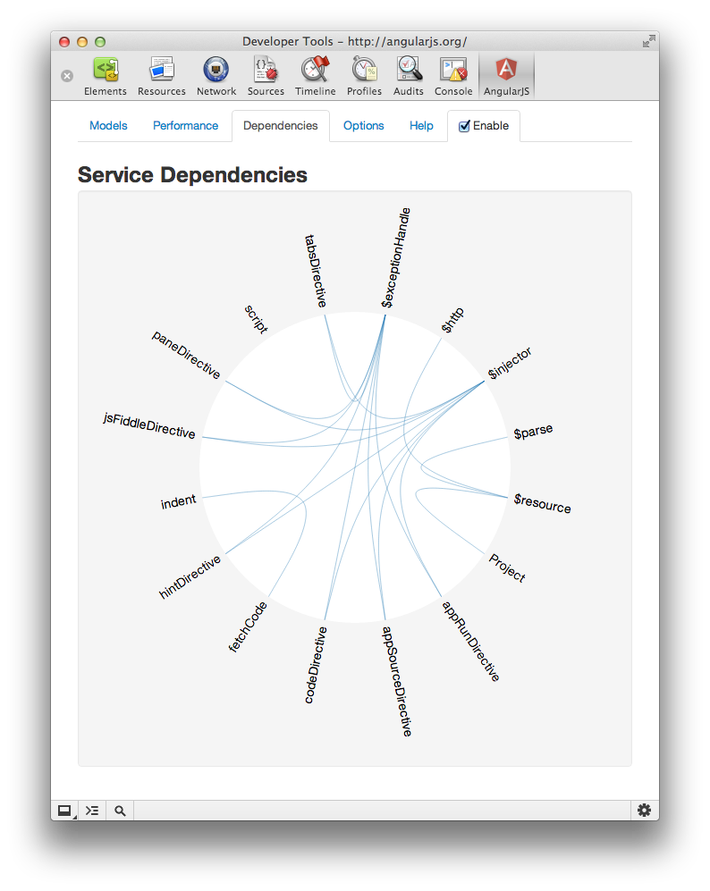
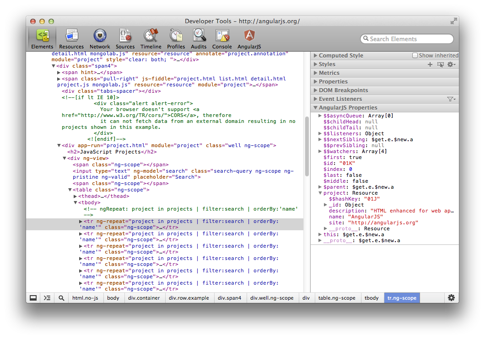

retour d'experience sur

Lexique
| JS | JavaScript |
| DOM | Document Object Model presents presents an HTML document as a tree-structure. |
| CSS | Cascading StyleSheet |
| AJAX | Asynchrnous Javascript And [Xml] |
| JSON | JavaScript Object Notation |
| NodeJS | Serveur web en javascript |
| NPM | NodeJS Package Manager |
AngularJS c'est quoi ?
- Un framework JS !
- modèle MVC
- Model de données dans les 2 sens
- Permet d'étendre le DOM
- Injection de dépendance
- Non intrusif (ne rentre pas en conflit avec d'autre framework)
- GOOGLE !
Contexte
Pourquoi avoir démarrer notre aventure avec AngularJS ?
- Recherche d'un framework JS evolué
- Grosse communauté et tutorial prometteur
- That's all...
Qu'avons nous fait avec AngularJS ?
- POC pour la raiffeisen
- Deployment-manager
- Un tetris en réseau !
- Un site de mariage !
Deployment-manager ?
- Un ouil qui permet de voir le status d'un parc de machine en "live"
- Possibilité de deployer une appli web en un click
- Autocomplétion de recherche sur un nexus
- Inventaire des machines en live
- Visualisation des logs, edit in place, notifications desktop, ...
AngularJS basics !
Principes
- HTML + Javascript (+ CSS)
- Basé sur MVC
-
- Model : $scope, la glue de votre application
- Vue : partielle HTML
- Controller : fonction JS
- Philosophie
"Write less code, go have beer sooner."
2 way binding
Prenons une variable user.name
- Modification dans la vue (via input)
-
- Modification dans le model
ng-model="query" - Modification du model (depuis controller)
-
- IU automatiquement à jour
Méthodes indispensables
- ng-click ⇒ invoque une méthode de votre contrôleur lors du clique
-
ng-class ⇒ applique la classe si expression
<li ng-class="{ active : compte == compteCourant }"> - ng-model ⇒ bind un élément de la vue sur le model
-
ng-repeat ⇒ foreach d'angularjs
<li ng-repeat="element in liste"> -
ng-show ⇒ affiche l'élément si expression
<li ng-show="compte != undefined">
Directives
Extension du DOM
- Créer vos tags HTML
- Utiliser vos propres paramètres
<cotation value="CGI" />- Affiche la cotation boursière
- Automatiquement mis à jour
⇒ Transclude : réutilisation du code déclaré dans vos balises
Filtres
Fonction de conversion de valeur
-
Formater une valeur
{{ user.birthday | date:"dd'/'MM'/'yyyy" }} -
Filtrer une liste
{{ products | filter:query }} -
Trier une liste
{{ products | filter:query | orderBy:price }}
Implémentez vos filtres
Les inconvénients et lacunes d'AngularJS
Aucune recommandation d'organisation pour de gros projets

Quelle stratégie adopter ?
- Tout dans un fichier !
- Un fichier par type (controlleurs, filtres, directives)
- Un dossier par type
Aucune recommandation d'organisation pour de gros projets
Comment organiser et charger un gros projet ?
- require.js
- tasks grunt
- wro4j ?
Aucune recommandation d'organisation pour de gros projets
Un exemple d'utilisation avec require.js
require(['MyApp','Angular','jQuery','app/controllers'], function(App) {
App.initialize();
}Aucune recommandation d'organisation pour de gros projets
Un exemple d'utilisation avec require.js
var deps = ['Console',
'Angular',
'AngularExtra'];
var __main__controllers = ['adminuser',
'group',
... (25 elts)
'stage',
'stageedit'];
//add dependencies
for (var i = 0; i < __main__controllers.length; i++) {
deps.push('app/controllers/'+__main__controllers[i]);
}
define(deps, function (Console) {
Console.info("controllers loaded", __main__controllers);
});Aucune recommandation d'organisation pour de gros projets
L'utilisation de require.js demande de creuser la documentation d'AngularJS
Les metadonnées du HTML ne peuvent être utilisé (chargement asynchrone), il faut donc utiliser angular.bootstrap (qui n'a rien avoir avec bootstrap twitter)
Comment intégrer un projet AngularJS dans un build de production
Le projet ne peut rester éclaté dans 30 fichiers JS (pour des raisons de performances), il doit être minifié et donc obfusqué pour gagner en taille.
La plupart des outils de build JS dependent de node.js. NPM peut rapidement devenir un cauchemar sur un réseau fermé
Minification problem
app.controller('ProductCtrl', function($scope) {
// do stuff
$scope.var = ["hello"];
});Résultat ...
app.controller("ProductCtrl",function(a){a.var=["hello"]});Solution...
app.controller('ProductCtrl', ['$scope', function($scope) {
// do stuff
}]);Infinite update
Plusieurs watchers modifient un même objet du scope a chaque update.
Plusieurs objets se réferençant se modifient mutuellement à chaque update.
<input type="text" ng-model="timestamp" ng-change="version++"/>
<input type="text" ng-model="version" ng-change="timestamp = new Date()"/>
Directives scope nightmare
scope: {
title: '@', // the title uses the data-binding from the parent scope
onOk: '&', // create a delegate onOk function
onCancel: '&', // create a delegate onCancel function
visible: '=' // set up visible to accept data-binding
} Héritage de scope
L'héritage des propriétés et des méthodes ne se font pas de la même manière
<div ng-controller="FirstCtrl">
<div ng-controller="SecondCtrl">
</div>
</div>
//dans le contexte du scope de SecondCtrl
$parent.firstCtrlVar; //on doit utiliser le mot clé "$parent" pour accéder à la propriété du scope de FirstCtrl
firstMethodCall(); //la méthode est heritée du scope de FirstCtrl
$parent.$parent.$parent.maVar
Les avantages
Légèretée
Angularjs, sans optimisation à outrance, permet de consommer un minimum de bande passante
- Système de template par défaut
⇒ la balise ng-view définit où sont intégrées les vues - Chargement de vues partielles
- Données brutes chargées en asynchrone
⇒ JSON est le mieux intégré, XML possible
2 ways binding
| Element dans ma vue | ⇔ | Controller |
| ng-model pour un formulaire | Action backoffice | |
| {elt.nom} d'une liste | Traitement d'une pop-up | |
| ⇓ | ||
| Mise à jour des éléments |
Productivité
- Contrôleur / Appel de service
- Contrôleur / Affectation du résultat
- Vue / ng-repeat sur la liste
- Vue / Ajout des éléments de navigation : filtre, tri...
On ajoute une pop-up de modification ? La liste est mise à jour en même temps.
Productivité
Un petit exemple d'édition d'une liste avec un formulaire
Un petit exemple d'édition d'une liste aveec un formulaire ET validation
Réactivité
En combinant les quelques contrôles vus précédemments, on peut très rapidement obtenir des écrans vivants; sans avoir besoin de contrôler chaque intéraction comme on le ferait avec jQuery
<li ng-repeat="compte in comptes" ng-click="clickOnCompte(compte)" ng-class="{active : compte == selection}" >
{{ compte.libelle }}
</li>
<div ng-show="selection != undefined">
{{ selection.devise }} {{ selection.solde | number:2 }}
</div>function clickOnCompte(compte) {
$scope.selection = compte;
}Maintenabilité
Batarang
Plugin Google Chrome pour debugguer des applis AngularJS

Batarang

Batarang

Batarang
Batarang
Après angularJS ?
What's next ?
Combler les lacunes des directives
Polymer is a new type of library for the web, built on top of Web Components, and designed to leverage the evolving web platform on modern browsers.
http://www.polymer-project.org/getting-started.html
<!DOCTYPE html>
<html>
<head>
<!-- 1. Shim missing platform features -->
<script src="polymer-all/platform/platform.js"></script>
<!-- 2. Load a component -->
<link rel="import" href="x-foo.html">
</head>
<body>
<!-- 3. Declare the component by its tag. -->
<x-foo></x-foo>
</body>
</html> Angular.dart is coming
Portage d'AngularJS en dart !
- Portage en parallèle d'Angular avec le langage dart
- Typage des paramètres
- Et tout les avantages de dart... (système de build, obfuscation, ...)
Présentation réalisée en HTML avec reveal.js, versionnée avec git.
Les exemples utilisent twitter bootstrap.